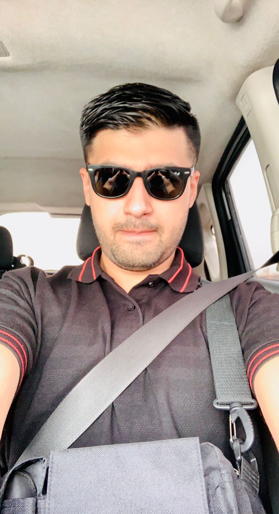

My name is Shahzaib Iftikhar and I am from Pakistan. I am currently studying a Master’s degree in Computer Science. I am interested in building a career in software development and enjoy working with programming languages such as Python. I am looking for graduate or junior roles where I can continue to develop my technical skills and gain practical industry experience.
I have experience working with Python, basic web development using HTML, and version control using Git and GitHub. Through my coursework, I have developed problem-solving skills and an understanding of software development principles. I enjoy writing clean, well-structured code and learning new technologies.